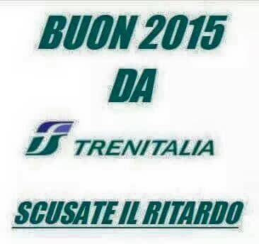

Yes, I'm late. I admit it. However, this doesn't stop me from sharing with you my most successful 2014 Instagram pictures. I have to say that I'm not surprised to learn that "that" picture has won first place. Besides, it confirms that my obsession is eventually shared by many others. Find out what it is...Scusate il ritardo
Needless to say that writing this post makes me feel pretty much like this joke about Trenitalia that lately has been circulating on different social medias: